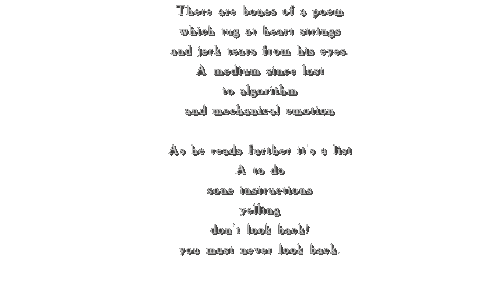

“We want to cultivate the exercise of positive freedom–freedom-to rather than simply freedom-from–and urge feminists to equip themselves with the skills to redeploy existing technologies and invent novel cognitive and material tools in the service of common ends.”
“slow computing entails a sequence of identifying contingencies – moments in life when refusing to play a part in hyper-communication, -coordination, - consumption, -production would not negatively impact on others”